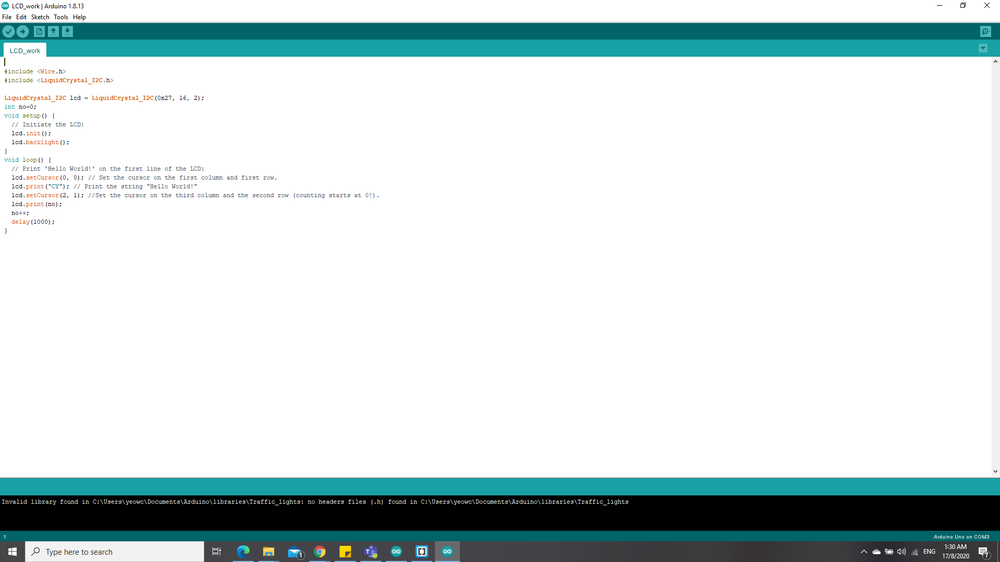

Home page
Embedded Programming
To start off, you would require a list of things
- Arduino Uno
- BreadBoard
- Couple of Dupont Cables
- Modules (ie buzzer, LEDS etc)
For the beginning of this portion, learning this was not exceptionally hard thanks to my previous experience with c++ programming, but it was challenging to adapt to the new language of arduino and mostly with struggling with controlling the inputs and outputs as its something relatively new to me.
Controlled Blink

To start off, we begin with the basics, controlling a blinking light at will. The Modules required are the the LEDs and a button. Connect and arrange the circuit in the format as shown above. To programme it, I used TinkerCAD to simulate and troubleshoot my code so as to ensure that my code runs smoothly in practical. Firstly, i had to plan out the structure of my code. The timeline of my code would firstly involve declaring my variables, and allocating it to my modules, like the button and LED. Next, I had to identify which were my inputs and outputs, whereby the output would be the LED and the input would be the button. Lastly, we had to plan the actions, for instances, the button had to be read first, therefore i first used the command "DigitalRead" to read the state of the button, whether it is high or low.and from there, I used the command "DigitalWrite" on the LED, where it "writes" the state of the LED, whether it is high or low, to set whether the LED is on or off. Below shows how it looks like physically.

Red, Yellow, Green Lights

For this next one, it is a little bit more complex, but no very complicated. The modules required are 3 LEDs of different colours, for this assignment, i chose to use red, yellow and green. Using TinkerCAD to simulate the diagram of how it should be wired up and the coding to ensure everything runs smoothly. For the code, Firstly, i had initialise my variables, like all the lights, into individual variables as well as to identify them all as outputs. Next, I had to set them up to light up 1 at a time, therefore, i used "digitalWrite" to set my red LED to high in order to switch it on, and apply a "delay" so as to ensure that there is a pause before the next LED is lit up. After the loop, we reused "Digitalwrite" to set the red LED to low and apply another "delay" so as to have a pause in between before the next LED is switched off ad this cycle repeats itself continously without stop. Below shows how it would look like physically, however since my some of my lights produced very weak lights, i had to use a different colour to ensure that it would work properly with a fine brightness.

Controlled Colour LEDs

For this one, i had to combine the first assignment and the second assignment together, to produce this product. The required modules are 3 LEDs and a button. Using tinkerCAD to simulate my circuit and also for troubleshooting, all to ensure that my code runs smoothly with no errors. For the code, I first initialise my values, and to declare which are my inputs and outputs for the LEDs and the button. Next, i had to create a "if" loop to determine which state of light i had wished to light up first, creating 5 different states, 1 for each individual to light up, another for all to light up and lastly to turn all off, and then looping it back to the state 1. This results in an endless loop of the states whereby everytime each state is cycled through an endless loop.
Using a LCD display


For this, the LCD display module was rather different and more unique from the previous assignments. Firstly, i had to download a separate library for the LCD Display module, called the "LiquidCrystal_I2C- master", from there, i had to use a different method of writing in my outputs, using commands such as lcd.print to print out stuff that i wish to be displayed onto the screen, lcd.setCursor to set the cursor to wherever the user desires to, and lcd.clear to erase all of the stuff that had been written in the display itself. For the commands in the picture above, Firstly, i printed the letters c & y in the first 2 spaces of the display. Afterwards, i printed a counter in the second row to count up every second along with the delay.